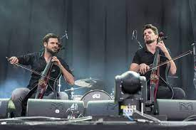

Luka Sulic

Biografia
Šulić proviene da una famiglia di musicisti di Isola e Ragusa. Inizia la sua educazione musicale a soli 5 anni nella sua città natia, dove il suo primo insegnante è proprio suo padre, violoncellista anche lui. Altri membri della sua famiglia hanno legami con la musica classica.
Per migliorare la sua tecnica frequenta l'Accademia Musicale di Zagabria. I suoi studi proseguono successivamente a Vienna e nella prestigiosa Royal Academy of Music di Londra.
Il musicista comincia a viaggiare per il mondo in Europa, Sud America, Giappone alternando rappresentazioni da repertorio classico solista, musica da camera fino a rappresentare in pubblico esecuzioni più moderne.
Nel 2011, fonda con il suo amico e collega Stjepan Hauser il duo di violoncellisti 2Cellos. I due musicisti arrangiano brani di musica contemporanea suonandoli con i soli due violoncelli proponendo un repertorio che spazia da Michael Jackson, Guns N' Roses, Muse.
